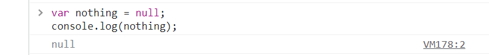

At its most basic level, a computer is a series of on and off switches, a set of 0s and 1s that flip back and flip in.
The concept of using binary values to represent information (0 and 1, true and false) is so fundamental along with most other programming languages,it also has a dedicated type to these values, referred to as a boolean.
Boolean values can be created by assigning a value of true or false to a variable.
var bool1 = true;
var bool2 = false;
Boolean values can also be created by using comparison operators, such as:
* Greater Than - >
* Less Than -
<< /span>
* Greater Than or Equal To - >=
* Less Than or Equal To -
<=< /span>
When you declare a variable, its value is initialized to whatever value you assign by using the = sign.
The following code snippet will initialize the variable as pi a number.
var pi = 3.14159265359;
But what if we created a variable that didn’t assign any value,like this
var declareVariable;
In this case, we will get declareVariable with an undefined value.
This means you have not assigned an value to the variable.
Variables with a null type, on the other hand, represent values that are intentionally empty. A null variable can be created by setting the variable equal to null.
Variables are only stored as undefined if they have been declared but not initialized with a value.
Null values intentionally are stored as null to indicate that the variable is empty. You should set a variable equal to null and only if the variable is expected to have no value.
If this isn’t making sense right now, it’s ok.
We will continue to touch on this concept in following explanation.